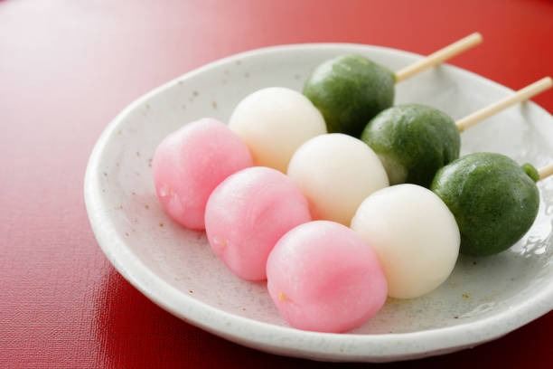
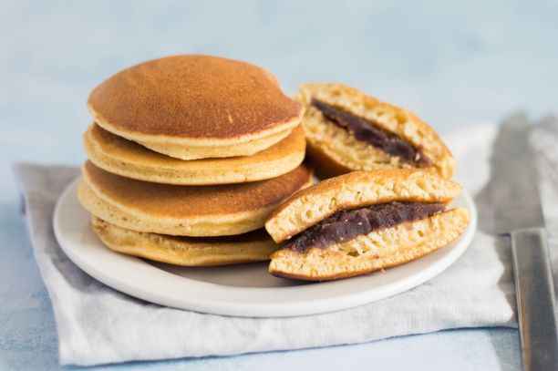
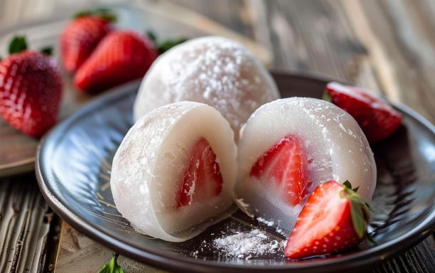
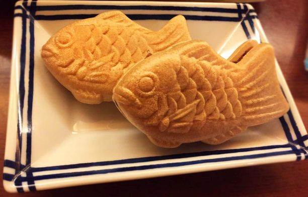

Featured Sweets

Dango

Warabi Mochi

Dorayaki

Daifuku

Taiyaki

Ingredients: Rice flour, water, soy sauce, sugar.
Steps: Mix flour and water, form balls, boil, skewer, brush with sauce.
Ingredients: Warabi starch, water, sugar, kinako.
Steps: Mix starch and water, heat until thick, cool, dust with kinako.
Ingredients: Flour, eggs, sugar, red bean paste.
Steps: Make pancake batter, cook, fill with bean paste.
Ingredients: Mochiko flour, sugar, water, red bean paste or fruit.
Steps: Make mochi dough, flatten, fill, and wrap.
Ingredients: Flour, eggs, sugar, baking powder, custard or bean paste.
Steps: Make batter, pour into fish mold, add filling, cook until golden.
Ingredients: Sweet bean paste, rice flour, natural food coloring.
Steps: Shape into seasonal designs, serve fresh with tea.
At Blossom Sweets, we celebrate the delicate beauty and rich tradition of Japanese confectionery. From chewy dango and mochi to intricate namagashi and fluffy dorayaki, our handcrafted sweets bring a taste of Japan’s seasons and culture to your table.
Have a question about our sweets, an order, or a special request? We’d love to hear from you!
Reach out to the Blossom Sweets team — whether it’s feedback, collaboration, or just to say hello, we’re always happy to connect.
📧 Email: hello@blossomsweets.com
📍 Location: Kyoto-inspired treats, delivered with love worldwide 🌏
📞 Phone: +81-123-456-789
Follow us on Instagram: @blossomsweets